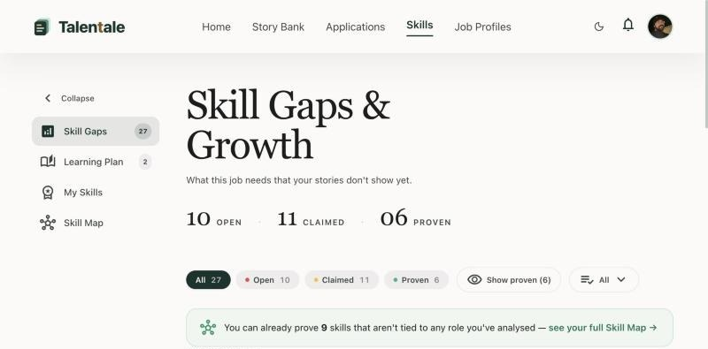
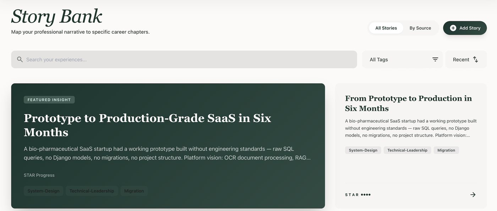
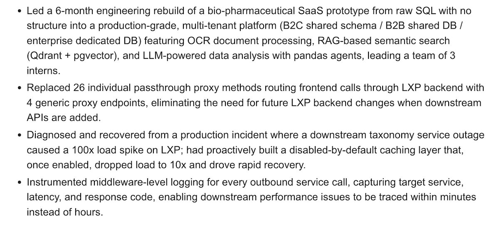

Principal Backend Engineer · Vancouver, BC
Prabhanshu Pandit
I build backend systems that keep working when the services they depend on don't. 13 years, from founding engineer at two startups to principal engineer at enterprise scale.
- Isolated production regions
- 7
- Requests / min, peak region
- 27k
- Enterprise customers
- ~140
- Years shipping backends
- 13
Figures for the enterprise learning platform I work on today.
Selected work
Problems I've solved in production
Six real problems from platforms I've worked on. Open any one for the problem, the fix and the result.
Startups
Zero to one, four times
On the founding team at two startups, technical lead for a third, and now a product of my own.
- 2013 – 2017
Founding engineer · Learning-tech startup
Built the multi-tenant platform in Rails, Node.js and Django and ran its AWS infrastructure. Moved 75+ customers to a new data model. Came back in 2021 and was there through its acquisition in 2022.
- 2017 – 2018
Founding team · Health-tech startup
Among the founding engineers of a clinical-trials platform for cancer immunotherapy research. Built its Node.js API services with Okta SSO on Google Cloud.
- 2025
Technical lead · Bio-pharma SaaS startup
Took the product from prototype to production in six months, leading three interns.
- 2026 – present
Talentale · My own product
Designed, built and run end to end. Live, with open sign-up. See below
Personal product · 2026 – present
Talentale
Live · open sign-upAn AI career platform that turns your real work experience into story-backed resumes and interview answers.
I designed, built and run it alongside my full-time job. It's live, and anyone can sign up and try it.
The problem
Most resumes are now AI-written and look the same, so keyword matching no longer separates strong candidates. And people with good experience still blank on the right story when an interviewer asks for one.
What it does today
- Story Bank: a guided AI interview that draws out your career stories and turns them into STAR stories you review and approve.
- Tailored resumes and cover letters for each job, built only from your own stories and profile.
- Evidence gaps, not keyword gaps: Python can be on your skills list while no story shows production backend work in it.
- Interview prep for each application, plus a prep copilot that coaches you using your own stories.



Architecture
Haiku handles fast, frequent steps like follow-up questions and job analysis. Sonnet handles the outputs where quality matters most: STAR stories, resumes and prep. Claude does all text generation; OpenAI is used only for embeddings, because Claude has no embedding model.
Engineering decisions
Candidate content stays in Talentale
Analytics and error tracking get IDs and event names only. A test fails if any prompt or completion text is captured.
Protected by default
The user always comes from the auth token, and auth is applied at the router level. A test fails if an endpoint that touches user data has no auth.
Every AI call is measured
One client for every Claude call tracks cost, latency, failure rate and cache hit rate per user and per feature.
Next: spoken mock interviews and story rehearsal, story-based job matching, and bringing stories in from your own AI chat via MCP.
Experience
13 years, newest first
From founding engineer at a startup to principal engineer on a platform serving enterprise customers in seven regions.
AI engineering and skills
Shipped AI, and what I build with
Side build for a startup · 2025 · Technical lead
Bio-pharma document platform
For a bio-pharma SaaS startup: a platform that lets teams search and ask questions across their documents in plain language. I took it from prototype to production, leading three interns, in my off hours.
Django multi-tenancy with custom migration tooling, OCR ingestion, and a RAG pipeline on Qdrant and pgvector with a query router.
In my day job
LLMs in production
- Built three GenAI proofs of concept in one hackathon: vector-based recommendations, RAG quiz generation and AI content creation. All three went onto the product roadmap.
- Shipped production LLM features for recommendations and content tagging.
- Use Claude Code daily, including for production work. Built the platform's Ruby service client in under two weeks with it.
- Lead prototyping of AI agents and developer tooling for my team.
Skills
- Languages
- Ruby (Rails), Python (Django), Node.js, JavaScript, Java (J2EE)
- Distributed systems
- Microservices, event-driven design, Kafka, RabbitMQ, circuit breakers, rate limiting and fair queuing, caching, idempotent jobs
- Data
- PostgreSQL, MySQL, MongoDB, Redis, Memcached, pgvector, Qdrant
- Infrastructure
- AWS, GCP, Azure, Kubernetes, Docker, OpenShift, Ansible, Jenkins CI/CD
- Observability
- New Relic (p95/p99 latency, Apdex, error rates), ELK, correlation IDs, structured logging
- Security
- OAuth 2.0, JWT (HS256/RS256), SSO with Okta and SAML, service-to-service auth
- AI engineering
- Claude Code, Kiro CLI, LLM integration, RAG pipelines, MCP
Play
Take the pager for a minute
Three small games, each based on a real problem from the work above.
Traffic Router
Requests queue at the gateway. Send each one to a service before it times out. Overfill a service and its circuit breaker opens. Ten dropped requests and your error budget is gone.
Squash Prod Bugs
Bugs pop up on the dashboard. Click them before they turn into incidents. Leave the green deploys alone: clicking one rolls back healthy code.
Incident Terminal
It's launch night and you're on call. Work the incident. Type a number or click an option. Type help for commands.
Contact
Let's talk
I'm interested in Staff and Principal engineering roles where reliability and scale matter. Based in the Vancouver area and working remote.